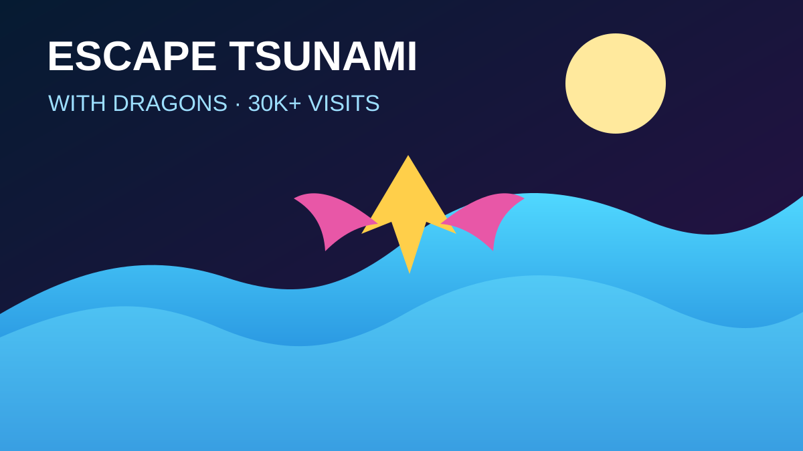
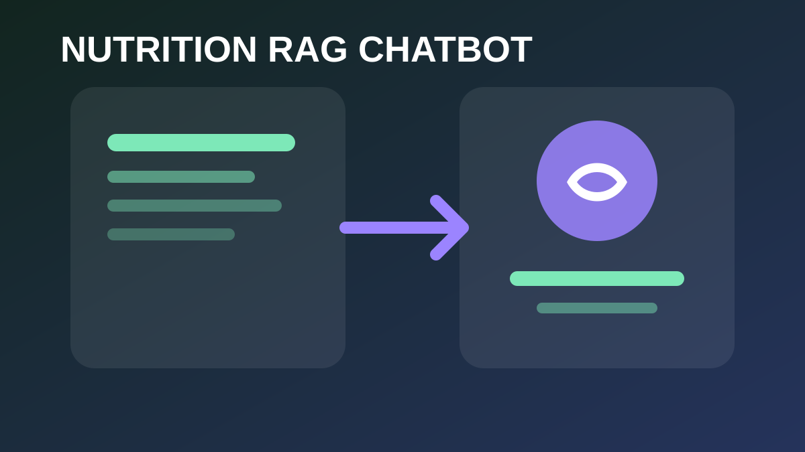
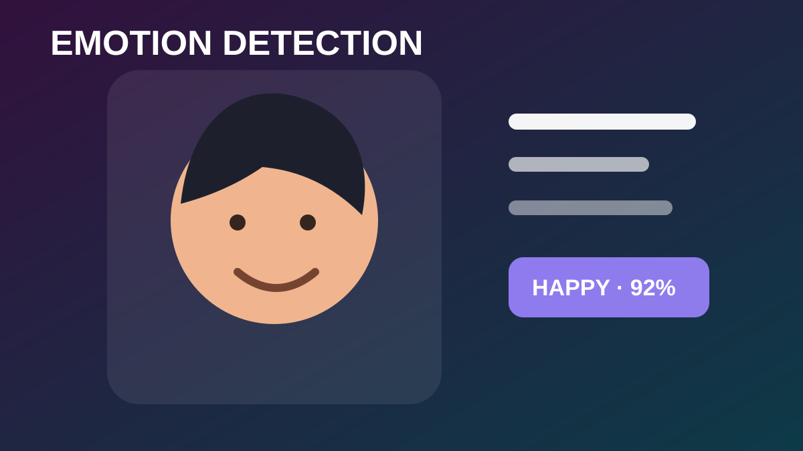
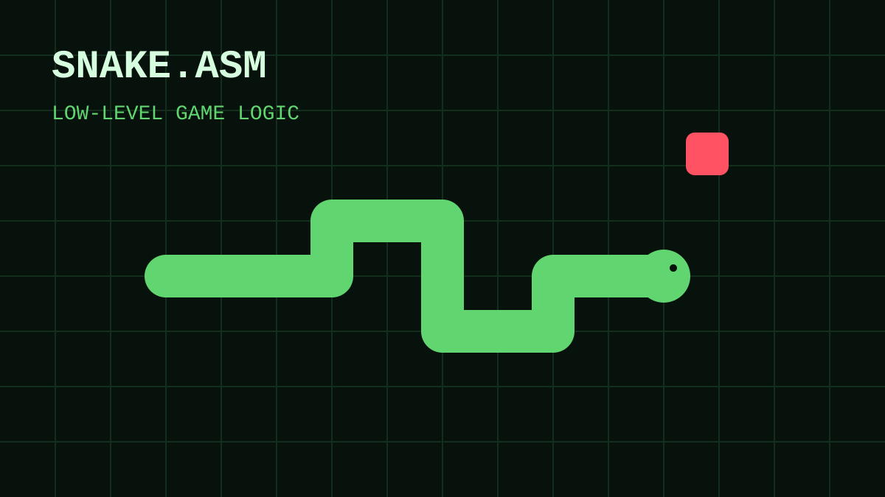

AI student · Roblox developer · Builder
I turn ideas into working experiences.
I’m Asad Mehmood, a BS Artificial Intelligence student at UMT who builds Roblox games, AI prototypes, and practical software projects.
About
Technical curiosity with a strong bias toward building.
I learn by making complete things: games people can play, AI systems that answer real questions, and software that solves a visible problem.
What I work on
My work sits at the intersection of artificial intelligence, programming, and interactive experiences. I have built projects in Python, C++, Assembly, HTML/CSS/JavaScript, and Roblox Studio.
I care about clear systems, useful features, performance, and presenting work in a way that people can actually understand and use.
“Failing is better than never shipping.”
A personal rule for learning, experimenting, and improving through real projects.
Skills
A practical toolkit for AI and interactive software.
Programming
PythonC++LuaJavaScript
AI & Data
Machine LearningNLPRAGData Mining
Game Development
Roblox StudioGameplay SystemsUIOptimization
Tools
GitGitHubVS CodeVisual Studio
Featured projects
Work with visible outcomes, not just course titles.
Each project highlights the problem, the implementation, and what I personally contributed.

Roblox · Featured
30K+Escape Tsunami with Dragons
A published Roblox survival experience featuring moving tsunami systems, collectible dragons, progression, global announcements, and server-side anti-exploit checks.
LuaRoblox StudioGame systemsOptimization

NLP · Retrieval
Nutrition Facts RAG Chatbot
A document-grounded question-answering system designed to retrieve relevant nutrition information before generating a response.
PythonNLPRAGTF-IDF

Machine Learning · Vision
Emotion Detection from Facial Expressions
A computer-vision project focused on preprocessing facial images, classifying expressions, and evaluating model predictions.
PythonComputer VisionClassification

Low-level programming
Snake Game in Assembly
A keyboard-controlled Snake game built in Assembly with movement, collision handling, score tracking, and screen updates.
AssemblyGame LogicInput Handling
Education & growth
Formal AI study supported by hands-on projects.
BS Artificial Intelligence · UMT
Coursework includes machine learning, NLP, data mining, operating systems, data structures, information security, web development, and programming.
Independent game and software development
Publishing Roblox experiences, learning production workflows, using Git/GitHub, and building portfolio-ready software.
Debating Club & spoken communication
Developing communication, presentation, and confidence alongside technical skills.